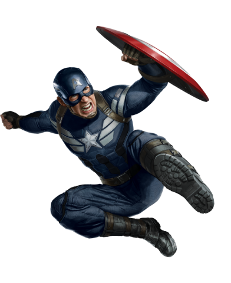

Steven Rogers
"Captain America"

Player Details
Biography
Steven Rogers was born in the Lower East Side of Manhattan, New York City, in 1920 to poor Irish immigrants, Sarah and Joseph Rogers. Joseph died when Steve was a child, and Sarah died of pneumonia while Steve was a teen. By early 1940, before America's entry into World War II, Rogers is a tall, scrawny fine arts student specializing in illustration and a comic book writer and artist. Disturbed by Adolf Hitler's rise to power, Rogers attempts to enlist but is rejected due to his frail body. His resolution attracts the notice of U.S. Army General Chester Phillips and "Project: Rebirth". Rogers is used as a test subject for the Super-Soldier project, receiving a special serum made by "Dr. Josef Reinstein", later retroactively changed to a code name for the scientist Abraham Erskie
The serum is a success and transforms Steve Rogers into a nearly perfect human being with peak strength, agility, stamina, and intelligence. The success of the program leaves Erskine wondering about replicating the experiment on other human beings. Erskine refused to write down every crucial element of the treatment, leaving behind a flawed, imperfect knowledge of the steps. Thus, when the Nazi spy Heinz Kruger killed him, Erskine's method of creating new Super-Soldiers died.
Place of birth
New York, US
Date of birth
July 4, 1918
Abilities
- Super-Soldier Serum; via Peak human strength, speed, durability, agility, reflexes, senses, and mental processing
- Master martial artist and hand-to-hand combatant
- Accelerated healing factor
- Master tactician, strategist, and field commander
- Wields Vibranium-steel alloy shield
Weaknesses